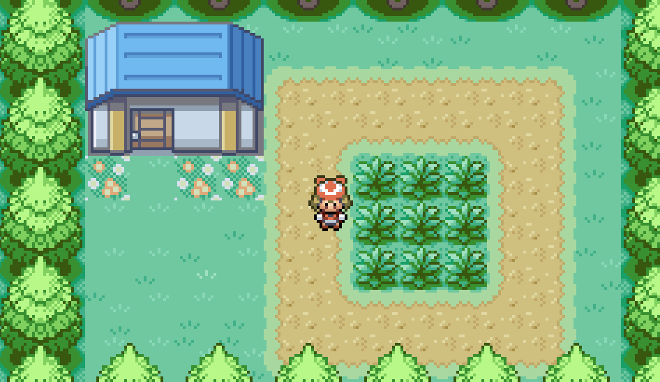
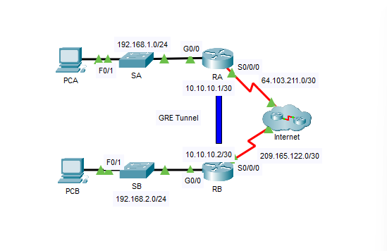
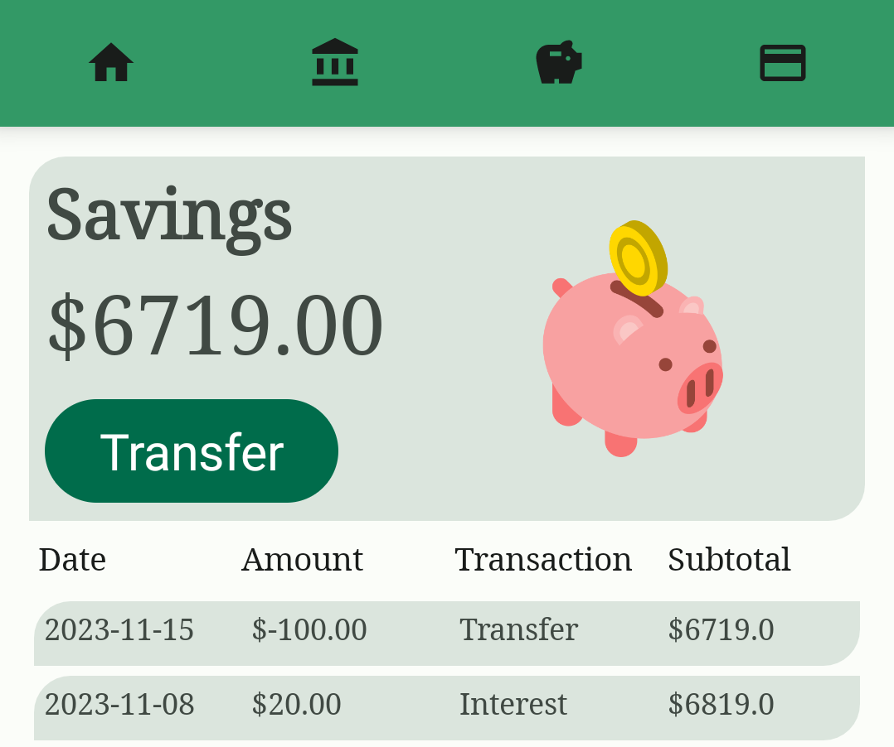

Retro Game Development
In my Game Programming course this semester, we've been learning how to re-create classic games from over the years. From the original NES to the Game Boy Color, I've always enjoyed playing 8-bit video games. My final project will likely have an 8-bit aesthetic to it.
Source: Vikram Singh

Cisco Packet Tracer
In Security, we've been working with Cisco Packet Tracer over the last few months. From configuring topologies to determining access lists, this application has been a good tool for learning about network security. For anyone interested in networking, this course has been a good eye-opener about providing security needs.
Source: Elzahraa Hasan

Android Development
In Application Development II, we've been learning about creating Android apps using Kotlin. After finding Java overcomplicated and error-prone, I've done much better in Kotlin and have had enjoyed working on assignments. My group's project is a banking app that we've built from scratch and it's been coming along really well.
